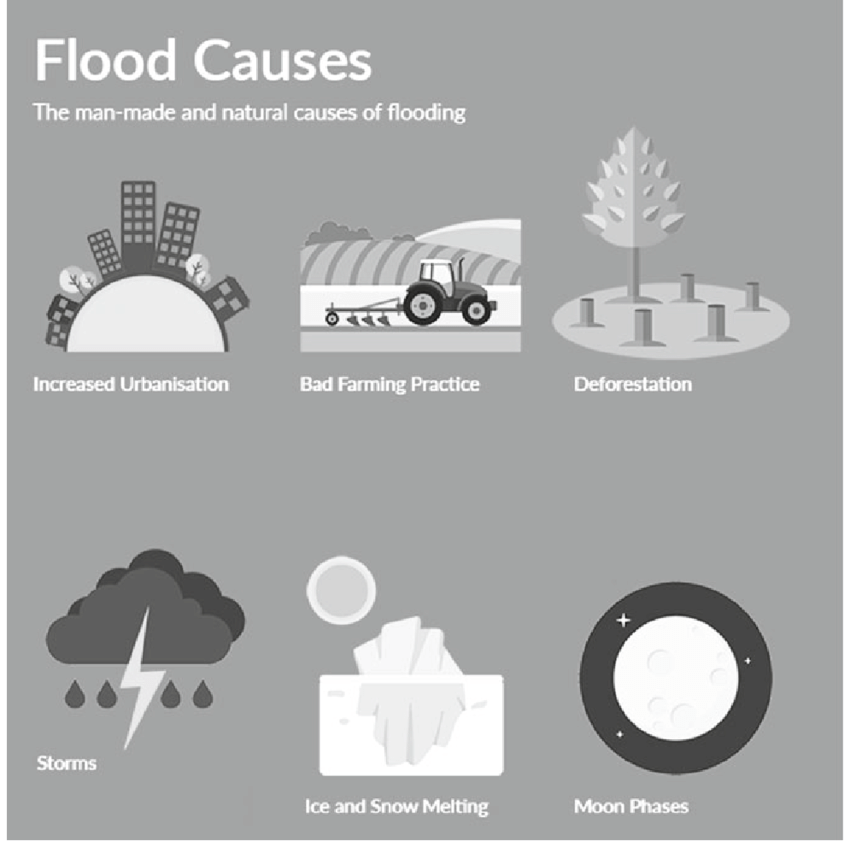

Overview of Floods:
Floods are natural disasters characterized by the overflow of water onto normally dry land, inundating areas that are typically not submerged. They are among the most widespread and destructive of all natural hazards, affecting regions around the world. Floods can vary in scale from relatively minor, localized events to catastrophic, widespread disasters. They can result from a combination of meteorological, hydrological, and human factors.
Causes of Floods:
- Heavy Rainfall: One of the primary causes of floods is heavy and sustained rainfall. When rainfall exceeds the soil's ability to absorb water or when it falls faster than it can drain away, flooding can occur.
- Snowmelt: In regions with cold winters, the melting of snow in the spring can lead to increased river flow and potential flooding, especially if the snowpack is large.
- Urbanization and Development:Urbanization can alter natural drainage patterns, increasing the risk of localized flooding in cities.
- Dams and Levee Failures: Failures or breaches in dams or levees can release large volumes of water, leading to downstream flooding.
- Storms and Hurricanes: Tropical storms and hurricanes bring intense rainfall and storm surges, which can lead to coastal and inland flooding.

a diagram on causes of floods
Effects of Floods:
- Loss of Life and Injuries: Floods can lead to fatalities and injuries, particularly when people are caught in rising waters or are unable to evacuate in time
- Crop and Livestock Loss: Agricultural fields and livestock can be inundated, leading to significant economic losses and food shortages.
- Property Damage: Floods can cause extensive damage to homes, buildings, infrastructure, and personal belongings, resulting in financial losses for individuals and communities.
- Environmental Damage: Floods can harm ecosystems, leading to habitat destruction and loss of biodiversity.
- Economic Impact: Floods can have a substantial economic impact on affected regions, leading to job losses and decreased economic activity.

Floods in Europe in 2020: effects and consequences